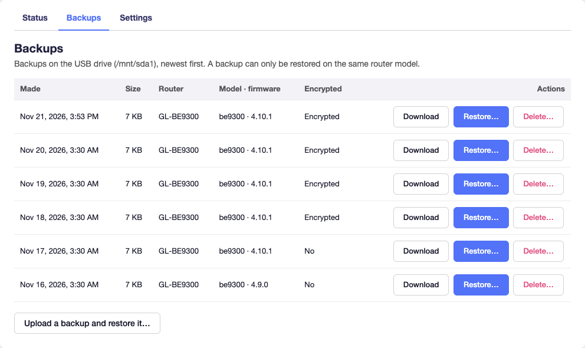

Auto Backup
Saves your router's settings to a USB drive on a schedule, and restores them in a couple of clicks.
- Daily or weekly; keeps the newest backups
- Optional AES-256 encryption with your passphrase
- Checks the model and firmware before a restore
luci-app-autobackup Read more